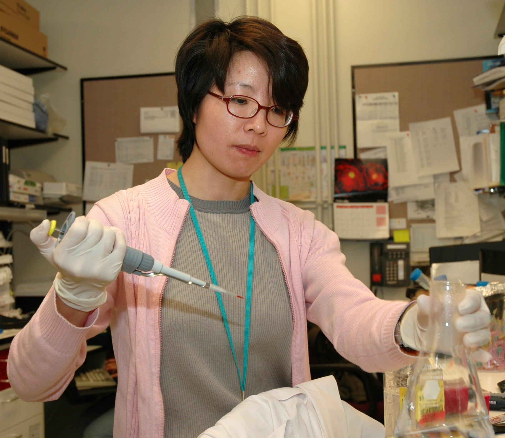

Flagship wet-lab product
Magnetic-bead DNA extraction

Tissue
Blood
Cultured cells
KodaPure is designed for research teams screening a magnetic-bead kit for everyday sample preparation. The page below covers representative sample inputs, expected yield and purity ranges, workflow timing, document access, and downstream compatibility.

Representative specification ranges are shown below for review planning. Final values, storage conditions, and SKU details should be confirmed in the technical sheet and lot documents.
| Specification | Representative value |
|---|---|
| Sample types | Fresh or frozen tissue up to 25 mg, whole blood up to 200 uL, buffy coat, cultured cells up to 5 x 10^6 |
| Expected DNA yield | Typically 5-30 ug from tissue and 3-15 ug from blood, depending on sample quality and input amount |
| Elution volume | Adjustable from 50-200 uL |
| A260/A280 | Typically 1.8-2.0 |
| A260/A230 | Typically above 1.7 |
| Processing time | About 45-60 minutes for 12 manual preparations |
| Format | 1.5 mL and 2 mL tube-based magnetic separation workflow |
| Kit sizes | 50 preps and 250 preps planned for commercial review; final SKU list to be confirmed |
| Storage | Most buffers at room temperature with selected reagents at 4 degrees C; final storage map to be confirmed in technical sheet |
| Downstream compatibility | PCR, qPCR, ddPCR, NGS library preparation, Sanger sequencing, Southern blot, and methylation workflows after QC review |
Cells and tissue are lysed so DNA is released into solution.
Magnetic beads capture DNA while contaminants remain in the liquid phase.
A magnet pulls the bead-bound DNA to the tube wall while wash buffers clear carryover.
Elution buffer releases purified DNA into a clean tube for downstream use.
Use this as a screening guide during evaluation. Final compatibility claims should be confirmed in validation data and lot-specific documentation.
| Sample type | PCR / qPCR | ddPCR | NGS | Sanger | Southern blot | Methylation analysis |
|---|---|---|---|---|---|---|
| Fresh or frozen tissue | Validated | Validated | Validated | Validated | Validated | QC review |
| Whole blood / buffy coat | Validated | Validated | Validated | Validated | Review | QC review |
| Cultured cells | Validated | Validated | Validated | Validated | Review | QC review |
Buffers for sample disruption, nucleic-acid release, and DNA capture onto magnetic beads.
Particle mix for capture and magnetic separation during the purification sequence.
Cleanup and recovery reagents for removing carryover and collecting purified DNA.
Step sequence, timing, and handling notes for evaluation and routine bench use.
Suitable for routine amplification workflows that need clean DNA and consistent operator handling.
Supports library preparation screening for research sequencing projects after normal QC review.
Appropriate for sequencing workflows where purified genomic DNA is needed for targeted readout.
KodaPure is offered for research use. Shipping lead time, destination coverage, and final document handling are confirmed during quotation and order review.
Application notes, pilot data, and publication citations can be shared when available for public release. Lot-linked documents and additional validation materials are reviewed through the commercial and technical process.
Start with the technical sheet if you are screening the kit, or move straight into a procurement conversation if you are comparing suppliers.